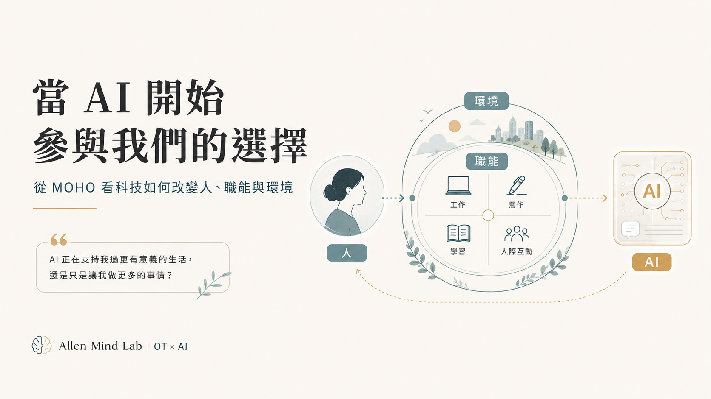

管理實務延伸學習
從專業執行者走向管理者，理解服務系統、團隊領導與實務決策。
閱讀管理學專區 →Ideas · Practice · Reflection
關於專業、管理、教育、科技與生活的持續書寫。不是為了大量更新，而是把值得留下的經驗整理成可閱讀、可思考、可使用的內容。
不必先理解所有分類。可以從一個你正在關心的問題進入， 再沿著文章慢慢認識 Allen Mind Lab 的思考方式。
文章會依主題分類，也允許跨領域。未來每一篇文章都使用一致的 AML 結構與安全檢核，讓網站內容愈來愈完整，而不是愈來愈凌亂。
Domains 告訴我們知識在哪裡；Series 則讓思考沿著同一個問題繼續往前走。
從專業執行者走向管理者，理解服務系統、團隊領導與實務決策。
閱讀管理學專區 →從自我覺察、團隊與組織支持，到數位工作邊界，重新思考第一線工作者如何被支持，而不只是被要求繼續撐住。
讓責任、資源與團隊成長形成良性循環。從有限理性、資源合作到公平當責與人員發展。
從共同方向、授權與領導風格，到組織變革與持續發展，理解如何讓職能治療團隊共同前進。
讓職能治療服務有系統地運作，從管理五大功能、SOP 到持續改善，建立可執行、可追蹤的專業服務系統。
從專業執行者走向管理者，理解職能治療服務背後的目標、資源、團隊、品質與組織支持。

從 MOHO 看 3C 到 AI：科技如何從延伸行動，走進人的能力、 習慣、判斷、選擇與職能生活。
從 PBS 的事前預防、積極忽略與替代行為，到冰山下的需要與安全邊界，重新理解「被看見」背後的行為與關係。
從私人 LINE、官方帳號到 AI 幕僚：為第一線工作者建立可以被找到、卻不必隨時在線的數位溝通邊界。
從個人的自我覺察、團隊求援與換手機制，到組織支持、 CARE 框架與缺工時代的工作重新設計。
助人工作者習慣評估別人的狀態，也需要回頭評估自己：體力與情緒、期待與現實，以及關係中的邊界。
從 COVID 後反覆的不舒服談起，思考正規醫療、休息、氣功修習與身心安頓如何各盡其分。
試試其他關鍵字，或清除篩選條件。

關於職能治療、PBS、管理、教育、AI、健康與生命反思。 當有新的文章或值得分享的內容，我會寄一封信給你。
Subscribe｜訂閱 Notes from the Lab →不是把所有文章寫成同一個樣子，而是確保讀者知道：這篇文章為什麼值得讀、經驗如何轉成思考、最後可以帶走什麼。
NOTES FROM THE LAB · ALLEN MIND LAB
← Back to Home